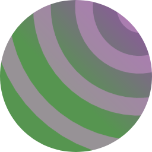

LESSON NAME
Intro - a paragraph or two broadly describing the topic of the lesson, the audience, and why someone might need it.
This is a self-demonstrating template for sphinx-lesson. You can copy and modify it to create your own lesson (deleting all the template stuff), and you can browse it to see a self-demonstrating example of our lesson best practices.
Prerequisites
prerequisites - let readers know what they need to do the typical pathway of the lesson. You can include mentions of what changes if you are below that (for example get motivation but not be able to do the exercises).
This template assumes someone already know enough Sphinx to get the actual project set up, can manage the deployment on Github Pages (or wherever). These are not needed during most of the lesson process and you can probably ask someone to help you with that. This can be found in the sphinx-lesson documentation or CodeRefinery documentation lesson.
It also assumes knowledge of basic git, file editing, etc.
(Remove this descriptive paragraph) The below table provides a rough guide for how long episodes are and a rough order of teaching, if someone was reading themselves. Each teaching event does not have to follow this exact order or timing, and the table doesn’t have to be updated to be exact for each course.
5 min |
|
25 min |
|
10 min |
|
5 min |
Introduction
This page would have basic information - not too technical, but provides a motivation for why someone would take the lesson. It should provide something some motivation even to non-technical readers (or readers who won’t read the lesson now, but they may know when they should read it later.)
The page title and filename can be changed to be more relevant than “introduction”.
Episode template
Questions
What syntax is used to make a lesson?
How do you structure a lesson effectively for teaching?
questionsare at the top of a lesson and provide a starting point for what you might learn. It is usually a bulleted list.
Objectives
Show a complete lesson page with all of the most common structures.
…
This is also a holdover from the carpentries-style. It could usually be left off.
The introduction should be a high level overview of what is on the page and why it is interesting. This page demonstrates every element you might typically find in a lesson and their typical usage.
The lines below (only visible in the source file) will set the default highlighting language for the entire page.
Section
A section.
Discussion
Discuss the following. This is green, so is intended to be exercise-like (active work in the class).
A discussion section
Another discussion topic
Section
print("hello world")
# This uses the default highlighting language
print("hello world)
This is a group-tab (if you flip it, all tabs on the page flip to this)
print("Hello World!")
Exercises: description
Exercise Topic-1: imperative description of exercise
Exercise text here.
Solution
Solution text here
The following code-tab has each tab as a code block (there is no space for unformatted text).
print("Hello World!")
# Note the tab titles need to be lowercase to max the exact lexer names.
print("Hello World!")
Advanced: topic of the box
Include advanced material in a box such as this. Depending on the importance, it could be dropdown, or not.
The purpose of setting it off like this is to make it clear that one does not need to focus their mental effort on this during the main lesson, but an instructor could of course choose to talk about it during any particular teaching event.
Optional: topic of the box
Include optional material in a box such as this. Depending on the importance, it could be dropdown, or not.
Image

Detailed caption goes here. When creating images, you should consider how other people coming after you can modify them. Include a modifiable source, and consider what is common enough that other people will know how to maintain it in the future. Also consider making it not so specific to the current text, so that it doesn’t have to be updated for every text change (maintainable is better than perfect). Consider using the caption for changeable explanations, instead of embedding it in the image. (Source: machine generated random image, CC-0)
Include alt text with the basics, but don’t duplicate explanation from the text in the caption (instead say “as explained in text”).
You should ONLY include CC-BY 4.0 or public domain images. Include the attribution in the image caption here.
Summary
A Summary of what you learned and why it might be useful. Maybe a hint of what comes in the next lesson.
See also
Other relevant links
Other link
Keypoints
What the learner should take away
point 2
…
This is another holdover from the carpentries style. This perhaps is better done in the “summary” section.
Episode (optional)
You can have optional episodes even inline with the “main flow”. Clearly label the title as “optional”
Summary
Last page in the main flow. Summarizes what was learned, re-iterates when it is used and not used, and tells what follow-ups there should be:
Advice on using the skills in practice
What to learn next (next CR lesson, or non-CR lessons)
Risks or pitfalls
What to look for in optional or advanced episodes
Encouragement to do more
Extra episode (optional)
Extra pages can be included and labeled as optional. This should have
(optional) in the title so that a casual reader is clear of the
purpose when browsing the table of contents.
Extra episode (advanced)
Extra pages can be included and labeled as advanced. This should have
(advanced) in the title so that a casual reader is clear of the
purpose when browsing the table of contents.
Quick Reference
Instructor’s guide
Why we teach this lesson
Intended learning outcomes
Timing
Preparing exercises
e.g. what to do the day before to set up common repositories.
Other practical aspects
Interesting questions you might get
Typical pitfalls
Who is the course for?
Several more paragraphs, possibly an intro and one per “learner persona” and what they can expect to get.
Lesson designers can copy and use this as a base to create new lessons. They should already know about Sphinx (for example from the documentation lesson) and a bit about the concept of sphinx-lesson, though really it’s normal Sphinx so copying this is sufficient. They should be able to learn our usual conventions.
Lesson maintainers (of existing lessons) can compare their lessons to the design standards seen here and see what updates may need to be done.
About the course
See also
sphinx-lesson https://coderefinery.github.io/sphinx-lesson/
CodeRefinery manuals, lesson development section https://coderefinery.github.io/manuals/
CodeRefinery documentation lesson https://coderefinery.github.io/documentation/ (Sphinx basics)
Credits
rkdarst has made and maintains this for now, but contributions are welcome.